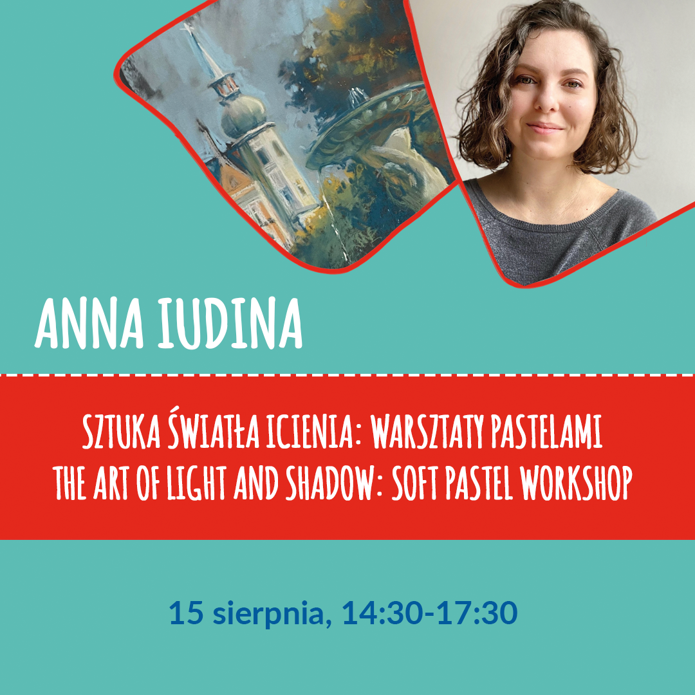
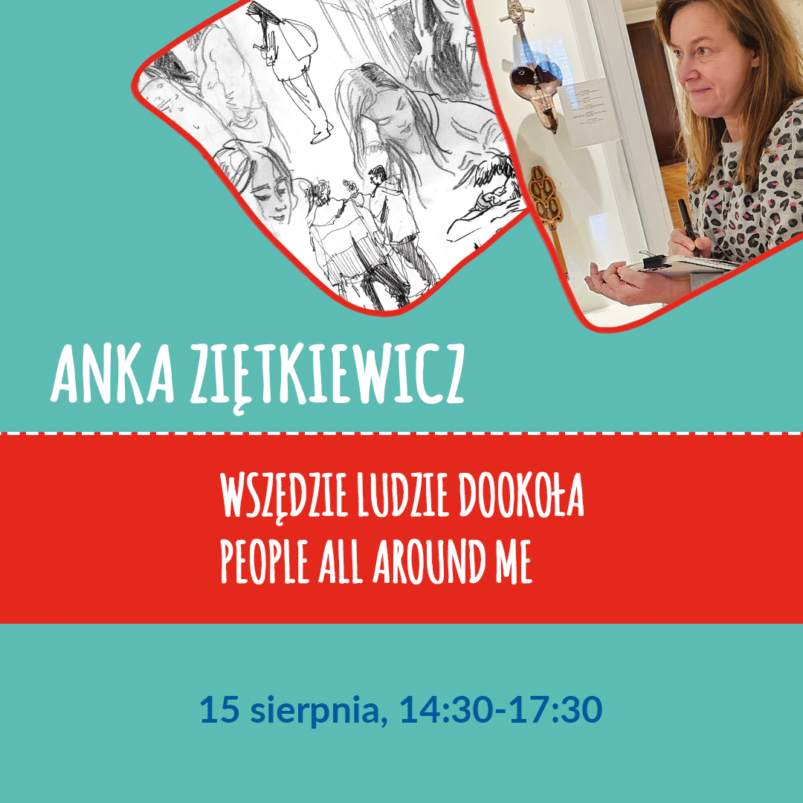
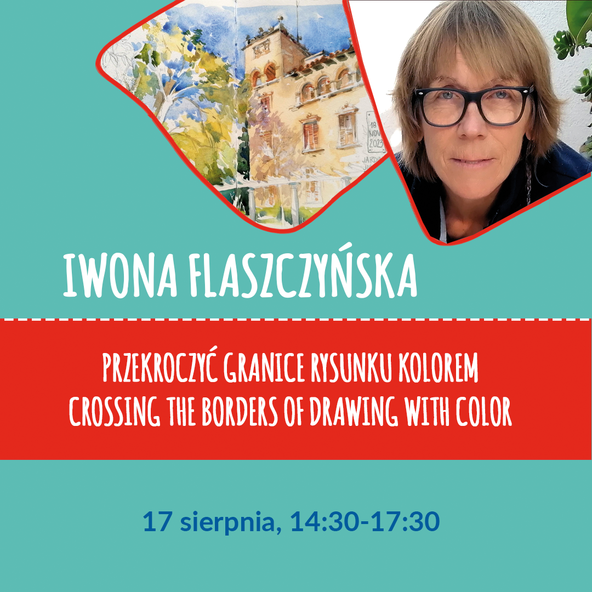
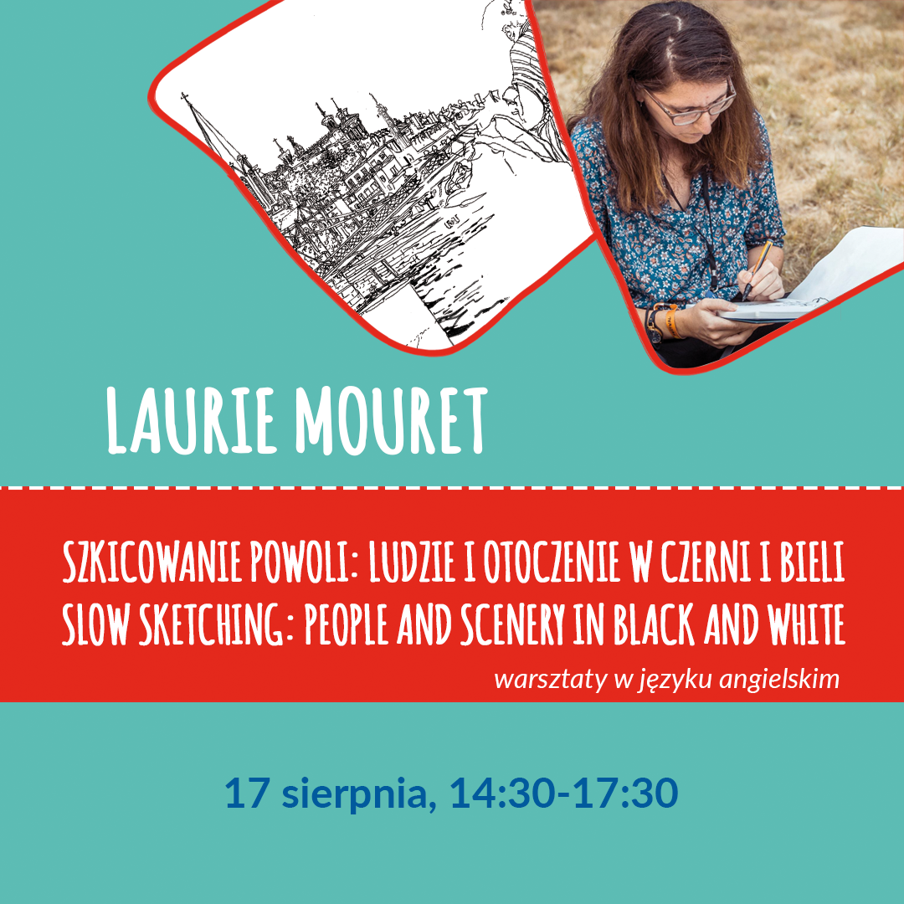

Urban Sketchers from Poland and Europe, let's unite once again! Join us for the third Urban Sketching Festival in Świdnica, Poland, from August 15 to 18, 2024. This beautiful city in Lower Silesia will be filled with outdoor drawing enthusiasts. Sketching sessions amid historical landmarks, plein air workshops, exhibitions, lectures, art supplies fair – these are just a few attractions. It's also a chance to meet interesting people and become part of the international community that admires the world with a sketchbook in hand.
The agenda will be released in May, and the registration will start in June.
For more information in the upcoming months, we will share updates on our festival's Facebook page: Urban Sketching Festival Świdnica
The price of the Festival entry (a goodie bag and ID for in-person pick-up during the Festival) is 50PLN and for a workshop is 100PLN.
"This year, each workshop teacher will also conduct a presentation or demo. Admission to presentations and demos is free for all Festival participants.
There is a participant limit for each session. The cost of individual workshops is 100 PLN. You can sign up for any number of workshops. ATTENTION - some sessions overlap, please check the schedule before signing up!

About the workshop
“The art of light and shadow: soft pastel workshop”
During the workshops, we will learn how to capture the play of light and shadow with pastels, discover scenes in a park environment, and experiment with various pastel drawing techniques.
About the teacher
Anna Iudina - An artist born in Siberia. The long graphic winter and short, colorful summer inspired her to create works full of color. Her creativity is diverse, working in various graphic and painting techniques. Sketches play an important role in her work, and her favorite subject is the human figure.
Instagram: aiu_art
Zapisy od 6 czerwca

About the workshop
“People all around me”
Sketching workshop of people in urban surroundings.
I'll try to convince you that drawing people is a great thing, a reflex and line training, learning to let go of details, shape synthesis. Figures can be useful in your sketches, add a story or simply liven up urban scenes, appear in the foreground or in the background. In the limited time of the workshop, it's hard to master rapid and perfect sketching of people, but I'll show a few useful ways to tackle this topic.
I hope we'll also just have a good time!
About the teacher
Anna Ziętkiewicz - A fan of urban sketching and has been doing it for a long time, even before she knew about the group's existence. For years, she has been an active member of Urban Sketchers Poland. She particularly enjoys sketching people.
Instagram: martwawiewiorka
Zapisy od 6 czerwca
About the workshop
“Colorful Świdnica: A Gouache Painting Journey”
Workshop in English.
Learn to create vibrant urban sketches using gouache and mixed media techniques.
Gouache offers a unique matte and opaque finish that’s perfect for urban scenes, enhancing the
depth and vibrancy of your artwork.
In this workshop, we’ll explore unconventional methods to achieve a loose, expressive, and bold
artistic style. By blending gouache with dry mediums like colored pencils, crayons, and graphite, we’ll break traditional artistic norms.
We’ll begin by experimenting with textures and mixing materials, encouraging freeform strokes and irregular patterns. These initial exercises will help you embrace new artistic languages to capture the lively essence of the cityscape.
Next, we’ll focus on creating mini-sketches of urban details. Here, we’ll use gouache for the
background and integrate colorful lines using dry techniques. We’ll work with spontaneous color
choices while emphasizing essential details to convey a sense of synthesis.
In the final part, we’ll explore into composition techniques, deforming perspectives and merging
various textures to craft a dynamic and fluid representation of the cityscape.
About the teacher
Maru Godas - She was born in Barcelona in 1966. Trained as a graphic designer, she runs her own graphic studio in her city and is an active member of the Urban Sketchers group. Her works have been featured in publications such as National Geographic and Planeta.
In her free time, Maru creates with watercolor and oils, currently working as an illustrator. She continually explores new techniques: inks, watercolors, pencils...
Instagram: marugodas
Zapisy od 6 czerwca
About the workshop
“In the search of contrast / Controlled expressiveness”
During the workshop, participants will learn about my approach to working outdoors, the materials I use, and how I strive to capture the atmosphere of a particular location. They will also learn about the compromises necessary to avoid 'fatigue' in their work.
Participants will discover how to seek out contrast and how to manipulate it to enhance the expressiveness of their watercolors.
About the teacher
Cezary Bednarczyk - A native of Zielona Góra. In July 2015, he defended his master's degree in painting at the Faculty of Arts of the University of Zielona Góra (in the studio of Prof. Stanisław R. Kortyka). He is mainly engaged in oil and watercolor painting, with his works focusing particularly on portraiture and landscape. He has participated in numerous national and international exhibitions, both solo and group. His second great passion is music (he is the drummer of a ska/swing/rock'n'roll band called Las Melinas).
Instagram: bednarczykcezary
Zapisy od 6 czerwca
About the workshop
“Fast sketching results with watercolour pencils”
Workshop in English.
The aim of the workshop is to show participants how to achieve fast sketching results with a limited range of water soluble colour pencils, followed by water as an additional element.
At the beginning of the workshop a number of thumbnail sketches will be done to decide on the composition and framing, as well as on the colour selection of maximum five colours for the actual sketch.
Once the preferred composition is selected we will start on a larger sheet: A3 size.
At the beginning the basic outlines will be set out using the brightest selected colour .
Afterwards we will define the basic shapes of the different coloured areas. The shapes themselves will get filled with varying patterns - based on the appearance of the actual object.
Using a water brush pen will define the different shapes and enhance selected coloured areas. At the same time the water is used to define the shadows.
Depending of the result after about 45 minutes on the larger sheet, we will add a few marks in stronger colours to highlight specific characteristics of the subject - this could be either the outline of a person or a significant architectural feature.
About the teacher
Michael Persch - German architect, artist, and urban sketcher residing in Plauen after spending many years abroad. He has been associated with the group since 2015 when he accidentally learned about the Urban Sketchers Singapore group.
Michael currently utilizes three sketching techniques: fountain pen combined with watercolor, ink painted with a bamboo stick, and watercolor pencils.
Instagram: persch.michael
Zapisy od 6 czerwca

About the workshop
“Przekroczyć granice rysunku kolorem”
During the 3-hour workshop, we will do 2 quick exercises (max. 0.5 hours each) in the form of vignettes, small-sized, working with color spots in two versions:
1. Previously made quick sketch, then loosely placed color spots using a reduced palette (up to 3 colors) and seeking contrasts between light and shadow.
2. We start with a color spot and then introduce the contour, finishing the sketch by applying color to achieve the effect of light and shadow.
Definitive drawing, 2 hours:
We will draw with pencil, pitt oil, microns, feathers, according to preference, and then transitioning to color, we will try to exceed the boundaries of the drawing by applying color spots so that the line is not an obstacle or limitation. Instead of coloring the drawing, we will try to make color a full-fledged and independent element of our composition, extending beyond the drawing's frame.
About the teacher
Iwona Flaszczyńska - She graduated from the Academy of Fine Arts in Warsaw. She received a scholarship to Mexico, where she eventually lived for 4 years, working on important conservation projects.
Since 1990, she has been living in Spain, where she teaches and pursues her own creativity. She has traveled extensively, mainly in Latin American countries. She has numerous solo and group exhibitions to her name in Mexico and Spain.
Since 2010, she has been actively involved in the Urban Sketchers Barcelona movement. She loves traveling, experiencing other cultures, mountains and hiking, beaches, and above all... drawing, which continuously evokes great emotions in her!
Instagram: iwonaflaszczynska
Zapisy od 6 czerwca

About the workshop
“Slow sketching: People and scenery in black and white”
Workshop in English.
The goal will be to have a clean sketch from the get go, which means that choices will need to be made to ensure that what interests us in the scenery will get drawn during the workshop.
The participants will learn to envision their sketch as a sum of its parts (thus making peace with "mistakes"), to focus on drawing sceneries one careful line at a time and to prioritize elements of the sketch.
About the teacher
Laurie Mouret - She discovered urban sketching in 2012 and immediately fell in love with this type of sketching. A self-taught artist who loves working in black and white, paying attention to details.
She loves sketching people, scenes full of clutter, and vegetation. She lives in Romania.
Instagram: lau.rie.mrt
Zapisy od 6 czerwca
Julita Oleszuk - Skanowanie prac
Prezentacja o wszystkich podstawowych kwestiach w temacie skanowania prac, przygotowania do druku oraz doborze materiałów, aby kolor był jak najwierniej odwzorowany.
Jak i gdzie wykonać skany i druki? Jakich parametrów używać? Na co uważać? Jak zapanować nad kolorem? Co może pójść nie tak?
Odpowiedzi na pytania jak i wiele innych kwestii poznacie i nauczycie się podczas prezentacji.
Dla kogo? Dla każdego rysownika!
Bo prędzej czy później przychodzi czas na wystawę prac, cyfrowe uwiecznienie rysunków czy też sprzedaż wydruków.
Wstęp wolny.
About the teacher
Julita Oleszuk - szeroko kreatywna projektantka graficzna. O wydruku i skanie artystycznym może rozmawiać godzinami, a swoje doświadczenie zdobyła w pracy digitalizując prace wielu artystów polskich.
Na codzień jest jedną z prowadzących USK Warsaw.
Instagram: ivy_foxes
Srikkanth Balasubramanian - Podróżniczy, opowiadający historię urban sketching
Każdy szkic może opowiedzieć historię, i co więcej - każdy urban sketcher ma swoją własną historię do opowiedzenia.
Ta prezentacja będzie historią mikrobiologa, który odnalazł pasję w urban sketchingu.
Wstęp wolny. Prezentacja w języku angielskim.
About the teacher
Srikkanth Balasubramaniano - pochodzi z Tiruchirappalli, z południowych Indii. Mieszka w Delft (Niderlandy) od 2019 roku. Mikrobiolog w ciągu tygodnia, urban sketcher w weekendy.
Srikkanth kocha szczególnie szkicowanie na różnych przedmiotach - liściach, kubkach, kamieniach, korkach od wina, etykietach po kombuchy i innych.
Jest aktywnym członkiem Urban Sketchers Nederland.
Instagram: srikkanthsketches
Detlef Surrey - Berlin: Mur odwiedzony ponownie
"Gdzie był Mur?" - to pytanie wielu turystów zadawało Detlefowi, gdy spotykali go szkicującego w różnych miejsach Berlina.
Właśnie, GDZIE on był?
To pytanie zaciekawiło Detlefa i zmotywowało do odwiedzenia ze szkicownikiem miejsc, w których stał Mur Berliński.
Dzięki tej ciekawości powstał szkicownik pełen reportażowych szkiców dokumentujących współczesny świat z historią w tle. Fascynujący aspekt bycia urban sketcherem!
Wstęp wolny. Prezentacja w języku angielskim.
About the teacher
Detlef Surrey - członek Urban Sketchers Berlin, ilustrator i rysownik. Do Berlina przybył w 1975 roku, aby studiować nauki polityczne. Wtedy zaczął też tworzyć komiksy i ukończył studia artystyczne. 9 listopada 1989 roku Detlef był świadkiem upadku Muru Berlińskiego w Checkpoint Charlie.
Instagram: surrey_sketches
Michael Persch - Szybkie rezultaty szkicowania kredkami akwarelowymi
Podczas dema Michael zaprezentuje techniki podobne do tych, które będą poruszane podczas warsztatów - kredki akwarelowe. Podczas demo praca powstanie od razu na dużym formacie, z pominięciem tworzenia serii małych rysunków.
Wstęp wolny. Demo w języku angielskim.
About the teacher
Michael Persch - niemiecki architekt, artysta i urban sketcher mieszkający w Plauen po wieloletnim pobycie za granicą. Z grupą związany jest od 2015 roku, kiedy to przypadkiem dowiedział się o grupie Urban Sketchers Singapore.
Michael aktualnie wykorzystuje trzy techniki szkicowania: pióro wieczne w połaczeniu z akwarelą, tusz malowany bambusowym kijkiem oraz kredki akwarelowe.
Instagram: persch.michael
Anna Ziętkiewicz - Czarno na białym
Mamy zazwyczaj mnóstwo farb, kredek, pisakow, możemy użyć wielu kolorów, mieszać techniki, czasem nad tym bogactwem panujemy, a czasami nadmiar możliwości nas przytłacza.
A gdyby tak spróbować tylko czarno na białym?
Spróbuję! Może się okaże, że to wcale nie ogranicza.
Wstęp wolny.
About the teacher
Anna Ziętkiewicz - Jest fanką urban sketchingu i robi to od bardzo dawna, zanim jeszcze wiedziała o istnieniu grupy. Od lat aktywna członkini Urban Sketchers Poland. Bardzo lubi szkicować ludzi.
Instagram: martwawiewiorka
Cezary Bednarczyk - W miejskim pejzażu
W trakcie demonstracji akwarelowej uczestnicy poznają warsztat mojej pracy z pejzażem miejskim. Podczas malowania możliwe będzie zadawanie pytań bądź po prostu wymiana zdań na temat malowania akwarelą.
Wstęp wolny.
About the teacher
Cezary Bednarczyk - rodowity zielonogórzanin. W lipcu 2015 roku obronił dyplom magisterski z malarstwa na Wydziale Artystycznym Uniwersytetu Zielonogórskiego (pracownia prof. Stanisława R. Kortyki). Zajmuje się głównie malarstwem olejnym i akwarelowym a tematyka jego prac to w szczególności portret i pejzaż. Uczestnik wielu wystaw krajowych oraz zagranicznych, indywidualnych jak i zbiorowych. Jego drugą wielką pasją jest muzyka (perkusista ska/swing/rock’n’rollowej formacji Las Melinas).
Instagram: bednarczykcezary
Maru Godas - kolor, kształ i linia: intuicyjny dialog
Demo skupi się na użyciu technik mieszanych na kolorowym papierze oraz wykorzystaniu przestrzeni negatywnych. Nacisk zostanie postawiony na użyciu ograniczonej palety kolorów, pokazane zostanie jak mieszać plamy kolorów z liniami i pociągnięciami pędzla. Podczas dema styl będzie pełen spontaniczności i wolności.
Wstęp wolny. Demo w języku angielskim.
About the teacher
Maru Godas - Urodziła się w Barcelonie w 1966 roku. Z wykształcenia grafik, prowadzi własne studio graficzne w swoim mieście oraz jest aktywną członkinią grupy Urban Sketchers. Jej prace znalazły się w publikacjach takich jak National Geographic czy Planeta.
W wolnym czasie Maru tworzy gwaszem i olejami, aktualnie pracuje jako ilustratorka. Ciągle ekspoloruje nowe techniki: atramenty, akwarele, kredki...
Instagram: marugodas
Anna Iudina - Wrażenia Pastelowe: Uchwyć Czar Starego Rynku
Na pokazie zostanie zaprezentowany osobisty podejście do rysowania z natury, metoda szukania kompozycji oraz oddawania światła i atmosfery miejsca.
Krok po kroku zobaczysz metody tworzenia pracy w technice pasteli, różnorodne techniki i narzędzia do nakładania i mieszania kolorów w celu uzyskania wyrazistych efektów.
Wstęp wolny.
About the teacher
Anna Iudina - Artystka urodzona w Syberii. Długa graficzna zima oraz krótkie, kolorowe lato zainspirowały ją do tworzenia dzieł pełnych koloru. Jej twórczość jest zróżnicowana, pracuje w przeróżnych technikach graficznych i malarskich. Szkice odgrywają ważną rolę w jej twórczości, a jej ulubionym tematem jest człowiek.
Instagram: aiu_art
Laurie Mouret - Poświęcanie czasu na rysowanie ludzi
Podczas demo zaprezentowane będzie szkicowanie ludzi. Wyjaśnione zostanie jak szkicować to, co naprawdę widzimy a nie to, co nam się wydaje. Pokazane zostanie jak powoli zbudować szkic i jak ustalić priorytety w procesie tworzenia pracy.
Demo odbędzie się w formie dialogu z uczestnikami, z prezentacją szkicowania.
Wstęp wolny. Demo w języku angielskim.
About the teacher
Laurie Mouret - Odkryła urban sketching w 2012 roku i natychmiast pokochała taki rodzaj szkicowania. Samouk, który kocha pracować w czerni i bieli, poświęcając uwagę detalom.
Kocha szkicować ludzi, sceny pełne bałaganu oraz roślinność. Mieszka w Romanii.
Instagram: lau.rie.mrt
Iwona Flaszczyńska - Kolor jako barwna plama, niezależna od rysunku i jak można go wykorzystać do podkreślenia formy!
Rozwiązanie wybranego i przygotowanego uprzednio tematu, zilustrowane zdjęciami prac i demostracja na żywo, używając techniki akwareli, pitt oil oraz grafitów akwarelowych - watersoluble.
Wstęp wolny.
About the teacher
Iwona Flaszczyńska - ukończyła ASP w Warszawie. Otrzymała stypendium do Meksyku, gdzie ostatecznie mieszkała 4 lata, pracując przy ważnych projektach w konserwacji.
Od 1990 roku mieszka w Hiszpanii, gdzie zajmuje się nauczaniem i twórczością własną. Podróżowała wiele, głównie po krajach Ameryki Łacińskiej. Ma na swoim koncie wiele wystaw indywidualnych i zbiorowych w Meksyku i Hiszpanii.
Od 2010 roku bierze aktywny udział w ruchu Urban Sketchers Barcelona. Uwielbia podróże, poznawanie innych kultur, góry i górskie marsze, plaże a przede wszystkim… rysowanie, które nieprzerwanie wyzwala w niej wielkie emocje!
Instagram: iwonaflaszczynska